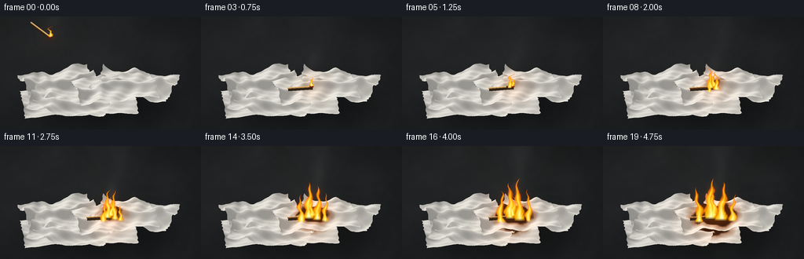
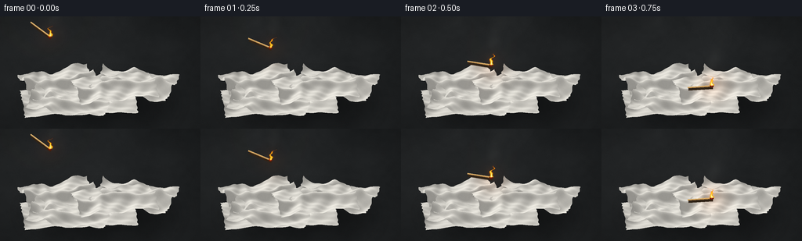

CODING AGENTS AS PIXEL WORLD MODELS
traex/GPT-6.1-Sol · material_0029
点击播放 · 原生 RGB 像素
逐轮保存的候选
回放视频、检查图与代码变化。
每份候选均可单独播放。实际图片检查记录在下方工具轨迹中。
候选 01播放与检查图
点击播放 · 原生 RGB 像素


展开代码变化
--- 上一保存版本
+++ 本次保存版本
@@ -0,0 +1,241 @@
+from pathlib import Path
+import json, math
+import numpy as np
+from PIL import Image, ImageDraw, ImageFilter
+from artifact_io import save
+
+ROOT=Path(__file__).resolve().parent
+SPEC=json.loads((ROOT/'task_spec.json').read_text())
+W,H=SPEC['width'],SPEC['height']; S=3
+w,h=W*S,H*S
+rng=np.random.default_rng(7218)
+Y,X=np.mgrid[0:h,0:w].astype(np.float32); X/=S; Y/=S
+
+def noise_field(seed, scales):
+ r=np.random.default_rng(seed); a=np.zeros((h,w),np.float32)
+ for nx,ny,amp in scales:
+ p=r.random((ny,nx)).astype(np.float32)
+ q=Image.fromarray(p).resize((w,h),Image.Resampling.BICUBIC)
+ a+=(np.asarray(q)-.5)*amp
+ return a
+
+# A stationary, close camera above a dark stone table.
+stone=noise_field(2,[(9,6,.9),(40,25,.3),(210,120,.13)])
+fine=rng.normal(0,.65,(h,w))
+bg=np.empty((h,w,3),np.float32)
+light=9*np.exp(-((X-60)/145)**2-((Y-48)/95)**2)
+for c,base in enumerate((29,31,32)):
+ bg[:,:,c]=base+light+stone*6+fine
+# Slightly defocused background, sharply resolved paper in the foreground.
+bg=np.asarray(Image.fromarray(np.uint8(np.clip(bg,0,255))).filter(ImageFilter.GaussianBlur(.65*S))).astype(np.float32)
+shadow=np.exp(-((X-128)/90)**4-((Y-110)/30)**2)
+bg*=1-.42*shadow[:,:,None]
+
+world=np.zeros((h,w,3),np.float32)
+uvmap=np.zeros((h,w,2),np.float32)
+normalmap=np.zeros((h,w,3),np.float32)
+depth=np.full((h,w),-1e9,np.float32)
+ids=np.full((h,w),-1,np.int16)
+
+# Each sheet is a continuous, creased surface, with a subtly scalloped edge.
+def sheet_mesh(cx,cy,cz,ww,hh,angle,seed,fold):
+ r=np.random.default_rng(seed)
+ us=np.linspace(-1,1,65); vs=np.linspace(-1,1,49)
+ u,v=np.meshgrid(us,vs)
+ px=u*ww/2; py=v*hh/2
+ px+=.6*np.sin(v*25+seed)*(np.abs(u)**10)
+ py+=.45*np.sin(u*28+seed)*(np.abs(v)**10)
+ # Folded ridges have rounded rather than crystalline crests.
+ z=cz+fold*(.26+.31*np.sin(2.8*u+1.3*v+seed)**2)
+ z+=fold*.50*np.exp(-((v-.22*np.sin(3*u+seed))/.22)**2)
+ z+=fold*.28*np.exp(-((u+.38+.16*v)/.14)**2)
+ z+=fold*.20*np.exp(-((u-.55+.21*v)/.2)**2)
+ z+=2.8*(np.abs(u)**8+np.abs(v)**8)*(1+.55*np.sin(4*u+3*v+seed))
+ z+=.85*np.sin(u*12+v*7+seed)+.35*np.sin(v*21-u*9)
+ c,s=np.cos(angle),np.sin(angle)
+ xx=cx+c*px-s*py; yy=cy+s*px+c*py
+ verts=np.stack([xx,yy,z],axis=-1)
+ du=np.gradient(verts,axis=1); dv=np.gradient(verts,axis=0)
+ n=np.cross(du,dv); n/=np.linalg.norm(n,axis=-1,keepdims=True)
+ uv=np.stack([(u+1)*ww/2,(v+1)*hh/2],axis=-1)
+ screen=np.stack([128+xx,108+.48*yy-.80*z],axis=-1)*S
+ return verts,n,uv,screen
+
+def raster_triangle(p,xyz,n,uv,idx):
+ lo=np.maximum(np.floor(p.min(axis=0)).astype(int),0)
+ hi=np.minimum(np.ceil(p.max(axis=0)).astype(int),[w-1,h-1])
+ x0,y0=lo; x1,y1=hi
+ if x1<x0 or y1<y0:return
+ yy,xx=np.mgrid[y0:y1+1,x0:x1+1]
+ xx=xx+.5; yy=yy+.5
+ ax,ay=p[0]; bx,by=p[1]; cx,cy=p[2]
+ den=(by-cy)*(ax-cx)+(cx-bx)*(ay-cy)
+ if abs(den)<1e-7:return
+ a=((by-cy)*(xx-cx)+(cx-bx)*(yy-cy))/den
+ b=((cy-ay)*(xx-cx)+(ax-cx)*(yy-cy))/den
+ c=1-a-b
+ weights=np.stack([a,b,c],axis=-1)
+ inside=(a>=-1e-5)&(b>=-1e-5)&(c>=-1e-5)
+ pos=weights@xyz
+ d=.80*pos[:,:,1]+.48*pos[:,:,2]
+ view=depth[y0:y1+1,x0:x1+1]
+ take=inside&(d>view)
+ if not take.any():return
+ view[take]=d[take]
+ world[y0:y1+1,x0:x1+1][take]=pos[take]
+ uvmap[y0:y1+1,x0:x1+1][take]=(weights@uv)[take]
+ normalmap[y0:y1+1,x0:x1+1][take]=(weights@n)[take]
+ ids[y0:y1+1,x0:x1+1][take]=idx
+
+sheets=[(-27,14,1,145,72,-.09,5,9),(-51,-20,4,94,65,-.34,14,22),(43,-12,8,102,67,.29,22,19),(-39,30,5,104,57,.25,8,16),(19,8,15,102,65,-.20,11,18)]
+for idx,sheet in enumerate(sheets):
+ verts,n,uv,p=sheet_mesh(*sheet)
+ for j in range(p.shape[0]-1):
+ for i in range(p.shape[1]-1):
+ for ix in [((j,i),(j,i+1),(j+1,i)),((j+1,i),(j,i+1),(j+1,i+1))]:
+ a,b,c=ix
+ raster_triangle(np.array([p[a],p[b],p[c]]),np.array([verts[a],verts[b],verts[c]]),np.array([n[a],n[b],n[c]]),np.array([uv[a],uv[b],uv[c]]),idx)
+
+paper=ids>=0
+normalmap/=np.maximum(np.linalg.norm(normalmap,axis=-1,keepdims=True),1e-5)
+L=np.array([-.40,-.50,.77]); L/=np.linalg.norm(L)
+illum=np.clip(np.sum(normalmap*L,axis=-1),0,1)
+# Fine random fiber and embossed diamond-dot quilting, in sheet coordinates.
+u=uvmap[:,:,0]; v=uvmap[:,:,1]
+qa=(u+v)/np.sqrt(2); qb=(u-v)/np.sqrt(2)
+ra=np.mod(qa+2.05,4.1)-2.05; rb=np.mod(qb+2.05,4.1)-2.05
+radius=np.sqrt(ra**2+rb**2)
+emboss=2.1*np.exp(-((radius-.65)/.23)**2)-2.5*np.exp(-((radius-.94)/.21)**2)
+emboss+=1.3*np.sin(u*7.5+v*.4)*np.sin(v*9)
+fiber=noise_field(20,[(150,90,2),(600,350,1.4)])
+tex=(emboss+fiber+rng.normal(0,.60,(h,w)))
+val=154+91*illum+tex
+# Valleys are dimmer, and overlapping edges have soft ambient/contact shadowing.
+val-=6*np.maximum(0,(18-world[:,:,2])/18)
+# Screen-space ambient occlusion underneath an overlapping lip.
+for shift in [(0,-3),(2,-2),(-2,-2)]:
+ other=np.roll(world[:,:,2],shift,axis=(0,1)); otherid=np.roll(ids,shift,axis=(0,1))
+ occ=(otherid!=ids)&(otherid>=0)&(other-world[:,:,2]>4)
+ val-=np.asarray(Image.fromarray(occ.astype(np.uint8)*255).filter(ImageFilter.GaussianBlur(1.4*S))).astype(np.float32)*(9/255)
+base=bg.copy()
+for c,m in enumerate((1.00,.988,.952)):
+ base[:,:,c][paper]=(val*m)[paper]
+base=np.clip(base,0,255)
+
+# Turbulence comes from continuous advected sine bands: no frame-to-frame cuts.
+def turbulence(x,y,t):
+ return (.46*np.sin(.31*x+.21*y-4.2*t+1.3*np.sin(.087*x-.18*y+1.3*t))
+ +.28*np.sin(.79*x-.32*y+7.5*t)+.18*np.sin(1.7*x+.83*y-13*t)
+ +.08*np.sin(3.6*x-1.9*y+19*t))
+
+def flame_volume(x0,y0,height,width,t,phase=0):
+ # A tapered rising jet breaks into curling tongues near its top.
+ s=(y0-Y)/height
+ sw=np.clip(s,0,1)
+ center=x0+(2.8*np.sin(7*sw+4*t+phase)+1.6*np.sin(15*sw-6*t+phase))*sw
+ center+=3.5*sw**2*np.sin(t*5+phase)
+ wid=width*np.maximum(0,1-sw)**.73*(.72+.18*np.sin(13*sw-7*t+phase))
+ turb=turbulence(X+phase*8,Y,t)
+ dist=np.abs(X-center)/np.maximum(wid, .28)
+ density=np.clip((1-dist+.26*turb-.13*sw)*4,0,1)
+ density*=np.clip(s*12+1,0,1)*np.clip((1.035-s)*18,0,1)
+ density*=((s>-.06)&(s<1.035))
+ hot=np.clip(1-dist*.78-sw*.60+.13*turb,0,1)
+ return density,hot
+
+def blurred_mask(m,rad):
+ return np.asarray(Image.fromarray(np.uint8(np.clip(m,0,1)*255)).filter(ImageFilter.GaussianBlur(rad*S))).astype(np.float32)/255
+
+def composite_fire(img,jets,t):
+ d=np.zeros((h,w),np.float32); heat=np.zeros((h,w),np.float32)
+ for j,(xx,yy,hh,ww,phase) in enumerate(jets):
+ dd,hhm=flame_volume(xx,yy,hh,ww,t,phase)
+ heat=np.maximum(heat,dd*hhm); d=1-(1-d)*(1-dd*.97)
+ hot=heat/np.maximum(d,.0001)
+ glow=blurred_mask(d,3.2)
+ img+=glow[:,:,None]*np.array([40,13,1.0])
+ # Transparent red fringes, saturated orange body, pale yellow heart.
+ fc=np.empty_like(img)
+ fc[:,:,0]=255
+ fc[:,:,1]=np.clip(58+207*hot**.75,45,255)
+ fc[:,:,2]=np.clip(2+190*np.maximum(0,(hot-.38)/.62)**1.8,0,195)
+ alpha=d*(.67+.31*np.clip(hot*1.8,0,1))
+ img=img*(1-alpha[:,:,None])+fc*alpha[:,:,None]
+ bloom=blurred_mask(heat,1.3)
+ img+=bloom[:,:,None]*np.array([12,8,2])
+ return img
+
+frames=[]
+charnoise=noise_field(42,[(16,12,4),(45,32,2),(100,75,.7)])
+for fi in range(SPEC['frames']):
+ t=fi/SPEC['fps']
+ img=base.copy()
+ # Fast downward toss, then a small bounce before resting on the top sheet.
+ if t<.75:
+ f=t/.75
+ hx=64+77*f; hy=26+63*(f**1.35)
+ theta=.64-.72*f
+ else:
+ hx=141; hy=89-2.0*np.exp(-(t-.75)*7)*np.sin((t-.75)*18)
+ theta=-.075
+ tx=hx-31*np.cos(theta); ty=hy-31*np.sin(theta)
+ growth=np.clip((t-.85)/3.8,0,1)
+ burn_radius=2+28*growth**.9
+ dd=np.sqrt((world[:,:,0]-13)**2+((world[:,:,1]+1)*.94)**2+((world[:,:,2]-29)*.7)**2)
+ distance=dd+charnoise*1.5
+ char=np.clip((burn_radius-distance)/4,0,1)*paper*(t>.95)
+ brown=np.clip((burn_radius+7-distance)/9,0,1)*paper*(t>.95)
+ img=img*(1-brown[:,:,None]*.58)+np.array([107, 61, 27])*brown[:,:,None]*.58
+ img=img*(1-char[:,:,None]*.94)+np.array([19,13,10])*char[:,:,None]*.94
+ # Tiny orange embers on the uneven advancing char boundary.
+ emb=np.exp(-((distance-burn_radius+1.0)/1.1)**2)*paper*growth
+ emb*=np.maximum(0,np.sin(u*1.8+v*.75+2*t))**10
+ img+=emb[:,:,None]*np.array([ 90,19,1])
+ flick=.90+.08*np.sin(t*12)+.045*np.sin(t*31)
+ lightdist=(X-hx)**2+((Y-hy)*1.05)**2
+ warm=np.exp(-lightdist/(450+growth*800))*flick
+ img+=warm[:,:,None]*np.array([14+29*growth,4+10*growth,-2])*paper[:,:,None]
+ img+=np.exp(-lightdist/(320+growth*1000))[:,:,None]*np.array([9,3,.1])
+ # Smoke rises behind the flame, subtly translucent against the dark background.
+ smoke=np.zeros((h,w),np.float32)
+ for k in range(10):
+ age=((t*.50+k*.137)%1.2)
+ sy=hy-17-age*(49+growth*30)
+ sx=hx+4*np.sin(age*7+t*.7+k*.3)+age*13
+ rr=3.3+age*7
+ smoke+=np.exp(-((X-sx)/(rr*1.2))**2-((Y-sy)/(rr*1.5))**2)*(.035+growth*.055)*(1-age/1.3)
+ smoke*=np.clip((hy-Y-10)/15,0,1)
+ smoke=np.clip(smoke,0,.19)
+ img=img*(1-smoke[:,:,None])+np.array([128,128,123])*smoke[:,:,None]
+ # Render a single slender wooden match with a dark red rounded head.
+ layer=Image.fromarray(np.uint8(np.clip(img,0,255))); draw=ImageDraw.Draw(layer)
+ a=(tx*S,ty*S); b=(hx*S,hy*S)
+ draw.line([(a[0]+S,a[1]+2*S),(b[0]+S,b[1]+2*S)], fill=(49,36,24),width=4*S)
+ stickcol=(193,144, 80) if t<2 else (132,80,40)
+ draw.line([a,b],fill=stickcol,width=2*S)
+ draw.line([(a[0],a[1]-.45*S),(b[0],b[1]-.45*S)],fill=(229,189,121),width=S)
+ if t>1:
+ burnstart=(hx-8*np.cos(theta),hy-8*np.sin(theta))
+ draw.line([(burnstart[0]*S,burnstart[1]*S),b],fill=(40,26,17),width=2*S)
+ draw.ellipse([hx*S-2.4*S,hy*S-2*S,hx*S+2.2*S,hy*S+2*S],fill=(85,27,14))
+ draw.ellipse([hx*S-1.4*S,hy*S-1.7*S,hx*S+.9*S,hy*S+.4*S],fill=(207,61,17))
+ img=np.asarray(layer).astype(np.float32)
+ matchheight=(13+1.3*np.sin(t*14)) if t<1.35 else (14+20*growth)*flick
+ jets=[(hx,hy-1,matchheight,3.5+growth*5,t*.1)]
+ if t>1.1:
+ jets.append((hx-4,hy+1,(16+growth*39)*(1+.12*np.sin(t*9)),3.2+9*growth,1.5))
+ if t>1.7:
+ jets.extend([(hx+10*growth,hy+3,(13+growth*38)*(1+.14*np.sin(t*11+2)),3+8*growth,3.1),
+ (hx-19*growth,hy+6,(11+growth*29)*(1+.15*np.sin(t*8)),2.5+6*growth,5.7)])
+ if t>2.5:
+ jets.append((hx+24*growth,hy+5,(8+growth*30)*(1+.17*np.sin(t*13)),2+5*growth,8))
+ img=composite_fire(img,jets,t)
+ # Vignetting and restrained sensor grain make the close-up coherent.
+ vign=1-.12*((X-128)/164)**2-.08*((Y-77)/105)**2
+ img*=vign[:,:,None]
+ img+=rng.normal(0,.4,(h,w,1))
+ frame=Image.fromarray(np.uint8(np.clip(img,0,255))).resize((W,H),Image.Resampling.LANCZOS)
+ frames.append(np.asarray(frame))
+frames=np.stack(frames)
+save(frames,ROOT)
+print('Saved',frames.shape,frames.dtype)
可观测工具轨迹
实际执行的命令与返回图片。
命令 1exit 0
/bin/bash -lc 'ls -la && cat prompt.txt && cat GENERATION_RULES.md && cat task_spec.json'
命令 2exit 0
/bin/bash -lc 'cat artifact_io.py'
命令 3exit 1
/bin/bash -lc "cat > generate.py <<'PY'
from pathlib import Path
import json, math
import numpy as np
from PIL import Image, ImageDraw, ImageFilter
from artifact_io import save
ROOT=Path(__file__).resolve().parent
SPEC=json.loads((ROOT/'task_spec.json').read_text())
W,H=SPEC['width'],SPEC['height']; S=3
w,h=W*S,H*S
rng=np.random.default_rng(7218)
Y,X=np.mgrid[0:h,0:w].astype(np.float32); X/=S; Y/=S
def noise_field(seed, scales):
r=np.random.default_rng(seed); a=np.zeros((h,w),np.float32)
for nx,ny,amp in scales:
p=r.random((ny,nx)).astype(np.float32)
q=Image.fromarray(p,mode='F').resize((w,h),Image.Resampling.BICUBIC)
a+=(np.asarray(q)-.5)*amp
return a
# A stationary, close camera above a dark stone table.
stone=noise_field(2,[(9,6,.9),(40,25,.3),(210,120,.13)])
fine=rng.normal(0,.65,(h,w))
bg=np.empty((h,w,3),np.float32)
light=9*np.exp(-((X-60)/145)**2-((Y-48)/95)**2)
for c,base in enumerate((29,31,32)):
bg[:,:,c]=base+light+stone*6+fine
# Slightly defocused background, sharply resolved paper in the foreground.
bg=np.asarray(Image.fromarray(np.uint8(np.clip(bg,0,255))).filter(ImageFilter.GaussianBlur(.65*S))).astype(np.float32)
shadow=np.exp(-((X-128)/90)**4-((Y-110)/30)**2)
bg*=1-.42*shadow[:,:,None]
world=np.zeros((h,w,3),np.float32)
uvmap=np.zeros((h,w,2),np.float32)
normalmap=np.zeros((h,w,3),np.float32)
depth=np.full((h,w),-1e9,np.float32)
ids=np.full((h,w),-1,np.int16)
# Each sheet is a continuous, creased surface, with a subtly scalloped edge.
def sheet_mesh(cx,cy,cz,ww,hh,angle,seed,fold):
r=np.random.default_rng(seed)
us=np.linspace(-1,1,65); vs=np.linspace(-1,1,49)
u,v=np.meshgrid(us,vs)
px=u*ww/2; py=v*hh/2
px+=.6*np.sin(v*25+seed)*(np.abs(u)**10)
py+=.45*np.sin(u*28+seed)*(np.abs(v)**10)
# Folded ridges have rounded rather than crystalline crests.
z=cz+fold*(.26+.31*np.sin(2.8*u+1.3*v+seed)**2)
z+=fold*.50*np.exp(-((v-.22*np.sin(3*u+seed))/.22)**2)
z+=fold*.28*np.exp(-((u+.38+.16*v)/.14)**2)
z+=fold*.20*np.exp(-((u-.55+.21*v)/.2)**2)
z+=2.8*(np.abs(u)**8+np.abs(v)**8)*(1+.55*np.sin(4*u+3*v+seed))
z+=.85*np.sin(u*12+v*7+seed)+.35*np.sin(v*21-u*9)
c,s=np.cos(angle),np.sin(angle)
xx=cx+c*px-s*py; yy=cy+s*px+c*py
verts=np.stack([xx,yy,z],axis=-1)
du=np.gradient(verts,axis=1); dv=np.gradient(verts,axis=0)
n=np.cross(du,dv); n/=np.linalg.norm(n,axis=-1,keepdims=True)
uv=np.stack([(u+1)*ww/2,(v+1)*hh/2],axis=-1)
screen=np.stack([128+xx,108+.48*yy-.80*z],axis=-1)*S
return verts,n,uv,screen
def raster_triangle(p,xyz,n,uv,idx):
lo=np.maximum(np.floor(p.min(axis=0)).astype(int),0)
hi=np.minimum(np.ceil(p.max(axis=0)).astype(int),[w-1,h-1])
x0,y0=lo; x1,y1=hi
if x1<x0 or y1<y0:return
yy,xx=np.mgrid[y0:y1+1,x0:x1+1]
xx=xx+.5; yy=yy+.5
ax,ay=p[0]; bx,by=p[1]; cx,cy=p[2]
den=(by-cy)*(ax-cx)+(cx-bx)*(ay-cy)
if abs(den)<1e-7:return
a=((by-cy)*(xx-cx)+(cx-bx)*(yy-cy))/den
b=((cy-ay)*(xx-cx)+(ax-cx)*(yy-cy))/den
c=1-a-b
weights=np.stack([a,b,c],axis=-1)
inside=(a>=-1e-5)&(b>=-1e-5)&(c>=-1e-5)
pos=weights@xyz
d=.80*pos[:,:,1]+.48*pos[:,:,2]
view=depth[y0:y1+1,x0:x1+1]
take=inside&(d>view)
if not take.any():return
view[take]=d[take]
world[y0:y1+1,x0:x1+1][take]=pos[take]
uvmap[y0:y1+1,x0:x1+1][take]=(weights@uv)[take]
normalmap[y0:y1+1,x0:x1+1][take]=(weights@n)[take]
ids[y0:y1+1,x0:x1+1][take]=idx
sheets=[(-27,14,1,145,72,-.09,5,9),(-51,-20,4,94,65,-.34,14,22),(43,-12,8,102,67,.29,22,19),(-39,30,5,104,57,.25,8,16),(19,8,15,102,65,-.20,11,18)]
for idx,sheet in enumerate(sheets):
verts,n,uv,p=sheet_mesh(*sheet)
for j in range(p.shape[0]-1):
for i in range(p.shape[1]-1):
for ix in [((j,i),(j,i+1),(j+1,i)),((j+1,i),(j,i+1),(j+1,i+1))]:
a,b,c=ix
raster_triangle(np.array([p[a],p[b],p[c]]),np.array([verts[a],verts[b],verts[c]]),np.array([n[a],n[b],n[c]]),np.array([uv[a],uv[b],uv[c]]),idx)
paper=ids>=0
normalmap/=np.maximum(np.linalg.norm(normalmap,axis=-1,keepdims=True),1e-5)
L=np.array([-.40,-.50,.77]); L/=np.linalg.norm(L)
illum=np.clip(np.sum(normalmap*L,axis=-1),0,1)
# Fine random fiber and embossed diamond-dot quilting, in sheet coordinates.
u=uvmap[:,:,0]; v=uvmap[:,:,1]
qa=(u+v)/np.sqrt(2); qb=(u-v)/np.sqrt(2)
ra=np.mod(qa+2.05,4.1)-2.05; rb=np.mod(qb+2.05,4.1)-2.05
radius=np.sqrt(ra**2+rb**2)
emboss=2.1*np.exp(-((radius-.65)/.23)**2)-2.5*np.exp(-((radius-.94)/.21)**2)
emboss+=1.3*np.sin(u*7.5+v*.4)*np.sin(v*9)
fiber=noise_field(20,[(150,90,2),(600,350,1.4)])
tex=(emboss+fiber+rng.normal(0,.60,(h,w)))
val=154+91*illum+tex
# Valleys are dimmer, and overlapping edges have soft ambient/contact shadowing.
val-=6*np.maximum(0,(18-world[:,:,2])/18)
# Screen-space ambient occlusion underneath an overlapping lip.
for shift in [(0,-3),(2,-2),(-2,-2)]:
other=np.roll(world[:,:,2],shift,axis=(0,1)); otherid=np.roll(ids,shift,axis=(0,1))
occ=(otherid"'!=ids)&(otherid>=0)&(other-world[:,:,2]>4)
val-=np.asarray(Image.fromarray(occ.astype(np.float32)*9,mode='"'F').filter(ImageFilter.GaussianBlur(1.4*S)))
base=bg.copy()
for c,m in enumerate((1.00,.988,.952)):
base[:,:,c][paper]=(val*m)[paper]
base=np.clip(base,0,255)
# Turbulence comes from continuous advected sine bands: no frame-to-frame cuts.
def turbulence(x,y,t):
return (.46*np.sin(.31*x+.21*y-4.2*t+1.3*np.sin(.087*x-.18*y+1.3*t))
+.28*np.sin(.79*x-.32*y+7.5*t)+.18*np.sin(1.7*x+.83*y-13*t)
+.08*np.sin(3.6*x-1.9*y+19*t))
def flame_volume(x0,y0,height,width,t,phase=0):
# A tapered rising jet breaks into curling tongues near its top.
s=(y0-Y)/height
sw=np.clip(s,0,1)
center=x0+(2.8*np.sin(7*sw+4*t+phase)+1.6*np.sin(15*sw-6*t+phase))*sw
center+=3.5*sw**2*np.sin(t*5+phase)
wid=width*np.maximum(0,1-sw)**.73*(.72+.18*np.sin(13*sw-7*t+phase))
turb=turbulence(X+phase*8,Y,t)
dist=np.abs(X-center)/np.maximum(wid, .28)
density=np.clip((1-dist+.26*turb-.13*sw)*4,0,1)
density*=np.clip(s*12+1,0,1)*np.clip((1.035-s)*18,0,1)
density*=((s>-.06)&(s<1.035))
hot=np.clip(1-dist*.78-sw*.60+.13*turb,0,1)
return density,hot
def blurred_mask(m,rad):
return np.asarray(Image.fromarray(m.astype(np.float32),mode='F').filter(ImageFilter.GaussianBlur(rad*S)))
def composite_fire(img,jets,t):
d=np.zeros((h,w),np.float32); heat=np.zeros((h,w),np.float32)
for j,(xx,yy,hh,ww,phase) in enumerate(jets):
dd,hhm=flame_volume(xx,yy,hh,ww,t,phase)
heat=np.maximum(heat,dd*hhm); d=1-(1-d)*(1-dd*.97)
hot=heat/np.maximum(d,.0001)
glow=blurred_mask(d,3.2)
img+=glow[:,:,None]*np.array([40,13,1.0])
# Transparent red fringes, saturated orange body, pale yellow heart.
fc=np.empty_like(img)
fc[:,:,0]=255
fc[:,:,1]=np.clip(58+207*hot**.75,45,255)
fc[:,:,2]=np.clip(2+190*np.maximum(0,(hot-.38)/.62)**1.8,0,195)
alpha=d*(.67+.31*np.clip(hot*1.8,0,1))
img=img*(1-alpha[:,:,None])+fc*alpha[:,:,None]
bloom=blurred_mask(heat,1.3)
img+=bloom[:,:,None]*np.array([12,8,2])
return img
frames=[]
charnoise=noise_field(42,[(16,12,4),(45,32,2),(100,75,.7)])
for fi in range(SPEC['frames']):
t=fi/SPEC['fps']
img=base.copy()
# Fast downward toss, then a small bounce before resting on the top sheet.
if t<.75:
f=t/.75
hx=64+77*f; hy=26+63*(f**1.35)
theta=.64-.72*f
else:
hx=141; hy=89-2.0*np.exp(-(t-.75)*7)*np.sin((t-.75)*18)
theta=-.075
tx=hx-31*np.cos(theta); ty=hy-31*np.sin(theta)
growth=np.clip((t-.85)/3.8,0,1)
burn_radius=2+28*growth**.9
dd=np.sqrt((world[:,:,0]-13)**2+((world[:,:,1]+1)*.94)**2+((world[:,:,2]-29)*.7)**2)
distance=dd+charnoise*1.5
char=np.clip((burn_radius-distance)/4,0,1)*paper*(t>.95)
brown=np.clip((burn_radius+7-distance)/9,0,1)*paper*(t>.95)
img=img*(1-brown[:,:,None]*.58)+np.array([107, sixty:=61, 27])*brown[:,:,None]*.58
img=img*(1-char[:,:,None]*.94)+np.array([19,13,10])*char[:,:,None]*.94
# Tiny orange embers on the uneven advancing char boundary.
emb=np.exp(-((distance-burn_radius+1.0)/1.1)**2)*paper*growth
emb*=np.maximum(0,np.sin(u*1.8+v*.75+2*t))**10
img+=emb[:,:,None]*np.array([ ninety:=90,19,1])
flick=.90+.08*np.sin(t*12)+.045*np.sin(t*31)
lightdist=(X-hx)**2+((Y-hy)*1.05)**2
warm=np.exp(-lightdist/(450+growth*800))*flick
img+=warm[:,:,None]*np.array([14+29*growth,4+10*growth,-2])*paper[:,:,None]
img+=np.exp(-lightdist/(320+growth*1000))[:,:,None]*np.array([9,3,.1])
# Smoke rises behind the flame, subtly translucent against the dark background.
smoke=np.zeros((h,w),np.float32)
for k in range(10):
age=((t*.50+k*.137)%1.2)
sy=hy-17-age*(49+growth*30)
sx=hx+4*np.sin(age*7+t*.7+k*.3)+age*13
rr=3.3+age*7
smoke+=np.exp(-((X-sx)/(rr*1.2))**2-((Y-sy)/(rr*1.5))**2)*(.035+growth*.055)*(1-age/1.3)
smoke*=np.clip((hy-Y-10)/15,0,1)
smoke=np.clip(smoke,0,.19)
img=img*(1-smoke[:,:,None])+np.array([128,128,123])*smoke[:,:,None]
# Render a single slender wooden match with a dark red rounded head.
layer=Image.fromarray(np.uint8(np.clip(img,0,255))); draw=ImageDraw.Draw(layer)
a=(tx*S,ty*S); b=(hx*S,hy*S)
draw.line([(a[0]+S,a[1]+2*S),(b[0]+S,b[1]+2*S)], fill=(49,36,24),width=4*S)
stickcol=(193,144, eighty:=80) if t<2 else (132, eighty,40)
draw.line([a,b],fill=stickcol,width=2*S)
draw.line([(a[0],a[1]-.45*S),(b[0],b[1]-.45*S)],fill=(229,189,121),width=S)
if t>1:
burnstart=(hx-8*np.cos(theta),hy-8*np.sin(theta))
draw.line([(burnstart[0]*S,burnstart[1]*S),b],fill=(40,26,17),width=2*S)
draw.ellipse([hx*S-2.4*S,hy*S-2*S,hx*S+2.2*S,hy*S+2*S],fill=(85,27,14))
draw.ellipse([hx*S-1.4*S,hy*S-1.7*S,hx*S+.9*S,hy*S+.4*S],fill=(207, sixty,17))
img=np.asarray(layer).astype(np.float32)
matchheight=(13+1.3*np.sin(t*14)) if t<1.35 else (14+20*growth)*flick
jets=[(hx,hy-1,matchheight,3.5+growth*5,t*.1)]
if t>1.1:
jets.append((hx-4,hy+1,(16+growth*39)*(1+.12*np.sin(t*9)),3.2+9*growth,1.5))
if t>1.7:
jets.extend([(hx+10*growth,hy+3,(13+growth*38)*(1+.14*np.sin(t*11+2)),3+8*growth,3.1),
(hx-19*growth,hy+6,(11+growth*29)*(1+.15*np.sin(t*8)),2.5+6*growth,5.7)])
if t>2.5:
jets.append((hx+24*growth,hy+5,(8+growth*30)*(1+.17*np.sin(t*13)),2+5*growth,8))
img=composite_fire(img,jets,t)
# Vignetting and restrained sensor grain make the close-up coherent.
vign=1-.12*((X-128)/164)**2-.08*((Y-77)/105)**2
img*=vign[:,:,None]
img+=rng.normal(0,.4,(h,w,1))
frame=Image.fromarray(np.uint8(np.clip(img,0,255))).resize((W,H),Image.Resampling.LANCZOS)
frames.append(np.asarray(frame))
frames=np.stack(frames)
save(frames,ROOT)
print('Saved',frames.shape,frames.dtype)
PY
python generate.py"命令 4exit 0
/bin/bash -lc "python - <<'PY'
p='generate.py'
s=open(p).read().replace(\"Image.fromarray(p,mode='F')\",\"Image.fromarray(p)\")
s=s.replace(\"val-=np.asarray(Image.fromarray(occ.astype(np.float32)*9,mode='F').filter(ImageFilter.GaussianBlur(1.4*S)))\",\"val-=np.asarray(Image.fromarray(occ.astype(np.uint8)*255).filter(ImageFilter.GaussianBlur(1.4*S))).astype(np.float32)*(9/255)\")
s=s.replace(\"return np.asarray(Image.fromarray(m.astype(np.float32),mode='F').filter(ImageFilter.GaussianBlur(rad*S)))\",\"return np.asarray(Image.fromarray(np.uint8(np.clip(m,0,1)*255)).filter(ImageFilter.GaussianBlur(rad*S))).astype(np.float32)/255\")
s=s.replace('sixty:=61','61').replace('ninety:=90','90').replace('eighty:=80','80').replace('(132, eighty,40)','(132,80,40)').replace('(207, sixty,17)','(207,61,17)')
open(p,'w').write(s)
PY
python generate.py"命令 5exit 0
/bin/bash -lc "command -v ffmpeg || true; ls -lh pixels.npz index.html inspection.png frames/00.png frames/19.png; python - <<'PY'
import numpy as np
from PIL import Image
f=np.stack([np.asarray(Image.open(f'frames/{i:02}.png')) for i in range(20)])
print('frames:',f.shape,'dtype:',f.dtype,'range:',f.min(),f.max())
print('Mean successive frame difference:',np.mean(np.abs(np.diff(f.astype(float),axis=0))))
PY"保存候选 1 份；完成命令 5 次；可验证图片返回 0 张。原始 API 响应与完整日志保留在本地。